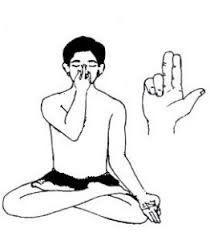

प्राणायाम > उज्जायी प्राणायाम :

-
उज्जायी प्राणायाम, जिसे "विक्टोरियस ब्रेथ" भी कहा जाता है, श्वसन प्रणाली को सुधारने और मानसिक
स्थिरता को बढ़ाने के लिए एक प्रभावशाली प्राणायाम तकनीक है।
उज्जायी प्राणायाम करने की विधि :
- आरंभिक स्थिति: सुखासन या पद्मासन में बैठें और रीढ़ को सीधा रखें।
- सांस लेते हुए: नाक से गहरी सांस लें और गले की खांसी की आवाज की तरह एक हल्की ध्वनि उत्पन्न
करें।
- सांस छोड़ना: धीरे-धीरे नाक से सांस छोड़ें, उसी ध्वनि को बनाए रखें।
- ध्यान केंद्रित करना: इस प्रक्रिया को 5-10 मिनट तक दोहराएं और ध्यान केंद्रित करें।
- आराम की स्थिति: प्राणायाम समाप्त करने के बाद कुछ समय तक शांत बैठें और गहरी सांस लें।
लाभ :
- उज्जायी प्राणायाम श्वसन प्रणाली को सुधारता है और मन को शांत करता है।
- यह मानसिक स्थिरता और एकाग्रता को बढ़ाता है।
Move to top